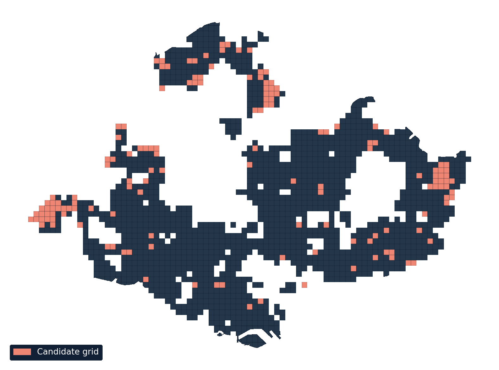
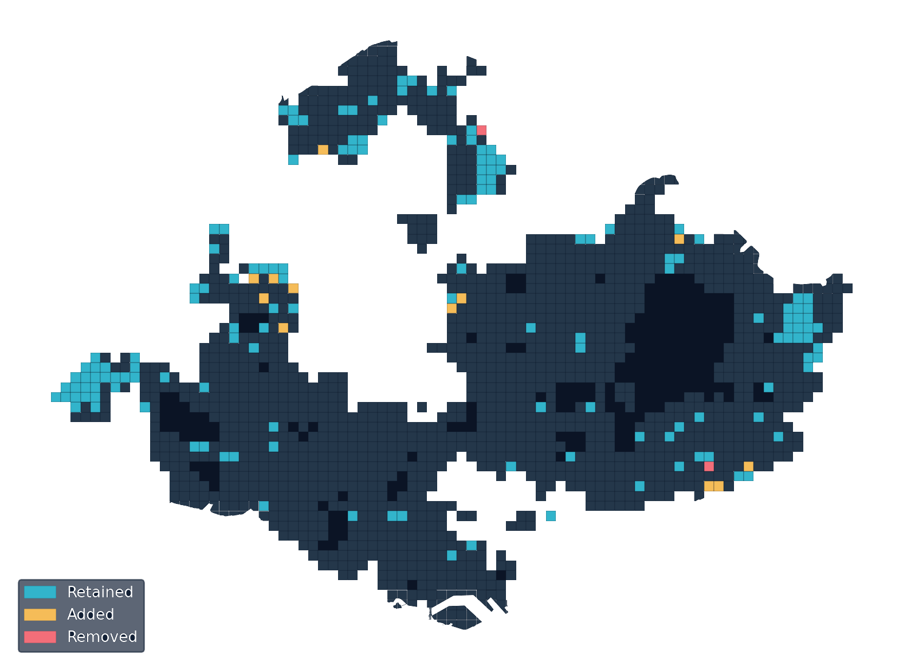

Transit Atlas
An AI Research Agent for Planners to Explore Bus Transit Gaps
Bridging spatial transport analytics and LLM research agents on a 400 m grid across Singapore — empowering planners to query equity scenarios, audit data provenance, and recalculate candidate gap areas.
Why Bus Transit & Where Are the Gaps?
Buses account for 50.9% of Singapore's daily transit boardings, yet physical station proximity does not guarantee equitable accessibility.
The GIS Baseline Framework
We established an equal-weight baseline across 1,597 residential 400 m grids. By crossing Demand Level ≥ 3 with Supply Deficit Level ≥ 3, we identified 148 candidate priority areas (approx. 650,000 residents).
- Jurong West: 27 candidate cells
- Yishun: 18 candidate cells
- Woodlands & Pasir Ris: 14 candidate cells each

Critical Planning Insight
When examining individual deficit indicators, destination access barriers were flagged far more frequently than poor bus stop coverage:
- 91 cells flagged for 30-min supermarket access deficits
- 81–82 cells flagged for 30 & 60-min CHAS clinic access deficits
- Only 20 cells flagged for bus-stop 400 m coverage deficits

Human-in-the-Loop 7-Step Workflow
A static GIS script cannot adapt to diverse and evolving urban planning queries. Transit Atlas couples LLM reasoning with deterministic spatial computing.
01 · Ask Question
Planner inputs a policy question, target demographic, or time window.
02 · Agent Proposes
Agent reviews literature and catalog, proposing indicators and data pipelines.
03 · Planner Audits
Planner checks data provenance, formulas, and halts if key data are missing.
04 · Python Ingestion
Acquires data, validates geometries, and normalizes into 400 m study cells.
05 · Propose Weights
Agent suggests evidence-backed indicator weights with explicit justifications.
06 · Planner Adjusts
Planner modifies or confirms weights before approving full execution.
07 · Recalculate & Map
Local GIS re-scores grids, comparing retained, added and exited cells.
Experience the Transit Atlas Demo
Explore our interactive web interface below or open it in fullscreen. Supports exploring two research scenarios: 'Elderly Healthcare Access' and 'Weekend Bus Capacity Matching'.
Final Research Report & Presentation
Review our complete academic report, slide deck, and methodological documentation.
Abstract: Where should public transport service audits begin? This study evaluates potential transit demand and service weaknesses across 1,597 residential 400-metre grid cells in Singapore. The equal-weighted baseline identifies 148 candidate cells (9.27% of study area). Adjusting older population and 30-minute clinic access weights expands this to 158 cells (+12 added, -2 removed). An AI research agent enables planners to translate natural language questions into auditable indicator proposals.
Deploy Transit Atlas Locally
Full reproducibility. Run the complete GIS pipeline and connect your personal OpenAI Codex account for private, unlimited queries.
# 1. Clone the repository
git clone https://github.com/jolynecujoh233/Transit_Atlas_SG.git
cd Transit_Atlas_SG
# 2. Launch workbench (Windows: double-click Start-Workbench.cmd)
.\Start-Workbench.cmd
# Or run directly with Python:
py -3.12 start.py
# 3. Open local workbench in browser (listening at http://127.0.0.1:8764/)
# Automatically connects to local OpenAI Codex for private, interactive research queriesZero Dependency Hassle
start.py auto-checks Python 3.12, creates an isolated .venv, decompresses GIS layers, and installs all wheels.
Codex Agent Connection
Reuses your personal 'codex login' session from the command line for free, unlimited research dialogue.
Complete Data Sovereignty
All spatial data, indicator weight revisions, and CSV exports run deterministically on your local machine.